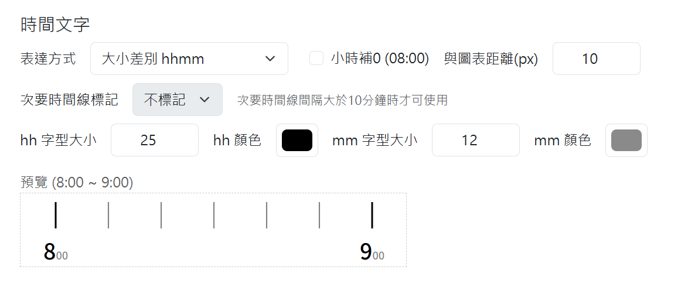

操作細節
基本設定頁面
基本設定分成三大部分，點擊標題即可展開。所有設定都有預設值，不調整也可以直接輸出圖片。設定改變後，請再按一次「輸出結果」，圖片才會更新。
列車顏色集設定
本網站提供 10 種顏色，用來標示運行圖上不同的車種、列車種類等等。這 10 個預設顏色可以在這裡改成您喜歡的顏色。
每班車要用哪一個顏色，在「時刻表」頁面選擇，詳情請見此頁。顏色集一經更改，時刻表內的顏色也會同步變更。但是已經輸出的圖片不會改變，若您想套用新的顏色，請再輸出一次。
繪圖設定
預設停站時間
時刻表中只有發車時刻、沒有到站時刻的車站，網站會用「發車時刻減去預設停站時間」當作到站時刻。預設是 60 秒。
如果您的路線較為複雜、精度不足，或是有大量待避、追越、交會等對於到站時刻的要求較高的情形，我們建議您使用待避時間計算功能，它可以自動計算並填入合理之數值，比起一律填60秒準確。詳情請見此處。
圖上每公里 / 每分鐘的長度
也就是縱軸 / 橫軸的比例尺。
預設值皆為 25 像素，也就是在圖上 45° 的斜線，代表一列平均時速 60 公里的列車，這個比例較適合傳統鐵路。若要製作高速鐵路的運行圖，建議將「圖上每公里的長度」調為 10 像素，此時 45° 的斜線代表平均時速 150 公里的列車。您可以利用以下公式，算出 45° 的斜線代表的平均時速：
平均時速(公里/小時) = 圖上每分鐘的長度 ÷ 圖上每公里的長度 × 60
以大部分列車的平均速度來設定這個比例，畫出來的運行圖會比較好讀。因此可以依照路線的不同調整比例尺。
圖上顯示的時間範圍
若您想跳過半夜圖上空白的部分，可以在這裡填入想顯示的時段。請用 4 位數字（hhmm）輸入，例如 0500 ~ 2400。
此處支援30小時制。即: 如果您想畫6時~翌日6時而非0時~24時，您可以輸入 0600~3000。時刻表內還是僅需要輸入 0000 ~ 2400 之間的時刻，網站會自動判斷。
繪圖的區間範圍
如果您的路線很長，還是可以一次將所有時刻表匯入，並在此設定縱軸需要輸出的路段。不須輸出的部分會自動裁掉，但時刻會保留。不須手動切成多份，分次繪圖。一次匯入也會讓待避時間的計算更準確。
圖片邊界
圖表外框到圖片邊緣的距離，上下左右可以分別設定。左邊要放站名、右邊要放站名別名、下面要放時間，所以文字較大或站名較長時，請把對應的邊界調大。邊界不足時，會自動跳出警告。
背景
選擇背景顏色。勾選「透明」則沒有背景，適合把圖片放進簡報或其他設計中。
OuDia 樣式
勾選「啟用」後，以 OuDia 的外觀繪圖，其他功能（向量輸出、列車號避讓、印刷模式、圖層）照常使用：
- 時間線：取代下面「線條」中的整點線、次要時間線、分鐘時間線。依「時間目盛」畫三層：點線、細線、粗線。例如「2 分」為每 2 分一條點線、每 10 分細線、每 60 分粗線。
- 車站線：主要車站為粗線，次要車站（OuDia 的一般駅）為細線。取代「線條」中的車站線、次要車站線。
- 時間線與車站線都使用「軸色」與「線寬」，粗線為兩倍線寬。
- 列車號：第一個列車號標在列車線的起點附近，之後照「每隔多少像素標一次」。勾選「列車號後加上列車名」則顯示「車次 列車名」。
- 停車駅明示：中途停車站停車不到 1 分鐘（或到站時刻空白）時，在發車處畫一個小圓圈，用來分辨短暫停車與通過。
時間文字、站名文字、外框、背景仍使用一般的設定。
線條
| 線條 | 說明 |
|---|---|
| 車站線 | 每個車站的橫線 |
| 次要車站線 | 次要車站（例如信號場）的橫線，預設為灰色、較細 |
| 整點線 | 每個整點的直線 |
| 次要時間線 | 整點之間的直線，可以選擇每 1、5、10、15、20、30 分鐘一條 |
| 分鐘時間線 | 沒有時間線的每一分鐘，以點線繪製，每公里一點、由上到下，形成一張網格。適合需要後續計算的應用。預設關閉。線寬就是點的直徑 |
| 圖表外框 | 圖表四周的框線，固定為實線，上下左右可以分別設定粗細 |
| 列車線 | 所有列車線的粗細與線型，也可以依顏色分別設定；單一列車的設定見列車名與線條顏色 |
每一種線條都可以設定粗細（線寬）和顏色；除了圖表外框，也可以選擇線型：實線（預設）、虛線、點線。
列車號
在列車線旁邊標上車次，文字顏色和列車線相同。標記的位置固定是兩站之間，以避免和車站線衝突的問題。
- 每隔多少像素標一次：列車線很長時，每隔這段距離再標一次。數字越大，標得越少。
- 站距小於多少像素不標：兩站太近時放不下文字，就跳過這一段，改標在下一段。
列車號避讓
讓車次文字盡量不要壓到其他列車的線、其他車次，或時間線。
這些設定會增加電腦的負擔。電腦或手機效能較弱時，請盡量放寬設定（例如取消勾選、把間距調小），否則可能畫不出來，甚至讓瀏覽器當掉。
- 啟用避讓：取消勾選則車次文字可以和其他線、文字重疊。
- 避開整點線 / 避開次要時間線：勾選後，車次也會避開這些線。次要時間線之間的距離要夠寬（至少 250 像素）才能勾選。
- 與線、文字的最小間距：車次文字和其他東西之間至少要留多少空間，可填 0 ~ 20。
找不到地方放的車次會被省略。
SVG 結構
只影響下載的 SVG 與印刷用檔案的內部結構，畫出來的樣子不變。方便用 Illustrator、Inkscape 編輯。
- 連接列車線（預設勾選）：同一班列車畫成單一一條線，而不是每一段各一條。虛線、點線在停站處也會連續。跨過午夜的列車，每一天各一條。
- 分圖層：把圖分成以下圖層（由下到上）：背景、時間線、車站線、列車線、列車號文字、圖框、文字-車站、文字-時間。
- 列車線再分為方向 / 顏色：列車線圖層再分成「順行」、「逆行」，或依顏色分成「顏色1」…（沒有選顏色的列車為「未指定顏色」）。兩者都勾選時，方向之下再分顏色。
時間線、車站線、列車線都有 id（例如 timeline-0830、stationline-3、train-1-12），方便之後用程式抓取位置，詳見設定 JSON。
車站文字
- 站名：顯示在圖的左側，可以設定字型大小、顏色，以及和圖表的距離。
- 站名別名：顯示在圖的右側，勾選「顯示」才會出現。別名在「路線資料」頁面輸入，詳情請見此頁。
- 次要站名、次要站名別名：次要車站的站名與別名，可以分開設定（預設為灰色、較小）。別名是否顯示同樣看上面的「顯示」。
時間文字
圖的下方標示時間的文字。
- 表達方式：
- 固定大小 hh:mm：例如 8:00
- 大小差別 hhmm：小時用大字、分鐘用小字
- 簡化：整點只標小時、次要時間線只標分鐘
- 小時補 0：勾選後 8:00 會變成 08:00。
- 與圖表距離：時間文字和圖表下緣的距離。
- 次要時間線標記：次要時間線要不要也標時間。次要時間線的間隔大於 10 分鐘時才可使用。
- 字型大小、顏色：依照選擇的表達方式而不同。
下方的預覽會即時顯示 8:00 ~ 9:00 的樣子。

文字超出提醒
如果站名、別名或時間文字可能超出圖片範圍，右下角會出現黃色的提醒。請把對應的「圖片邊界」調大，或把字型調小。
印刷模式
要製作成冊的話，請勾選「印刷模式」。網站會自動根據你所設定的「時間範圍」和「每頁時間」，算出需要多少頁數，並一次全部匯出成單一壓縮檔。
啟用後，上面所有以像素為單位的設定（線寬、字型大小、邊界⋯⋯）改以 mm 輸入與顯示，圖會有精確的實體大小（1 像素 = 1/ppi 英吋，ppi 預設 300）。
時間範圍會依「每頁時間」切成多頁，每頁輸出一個檔案，全部打包成 zip 下載。
- 頁面大小：可選 A4、A5、B5、B6 的直式或橫式，也可以自訂寬高。
- 出血：加在頁面之外的上下左右範圍，圖面不可超出出血。
- 圖上每公里 / 每分鐘的長度：以 mm 輸入，與上方的設定連動。
- 每頁時間：30 分鐘、1、2、3、4 小時。
- 重疊10分鐘：勾選後，每頁前後各多畫 10 分鐘，讓頁與頁之間有重疊，方便對照與裁切拼接。以每頁 2 小時為例，第一頁畫 23:50（前一天）~02:10，第二頁畫 01:50~04:10，以此類推。每頁的圖框寬度因此變成「每頁時間 + 20 分鐘」，此設定在B5直式，每分鐘1 mm下剛剛好，適合印刷成冊。
- 圖面對齊：垂直與水平方向各自選擇固定哪一側的邊距，以及邊距算到圖框還是含文字的最外側。在印刷時才會保持整齊。
- 輸出格式：向量文字 PDF（文字轉成外框，不需安裝字型）、向量文字 SVG、直接 SVG（文字不轉外框）。
設定右側有頁面預覽，並列出圖框到頁面邊緣的距離；圖面超出出血時以紅字標示，無法輸出。
自動補全、還原通過時間（可同時進行通過時間微調）兩個功能，請見待避時間計算。